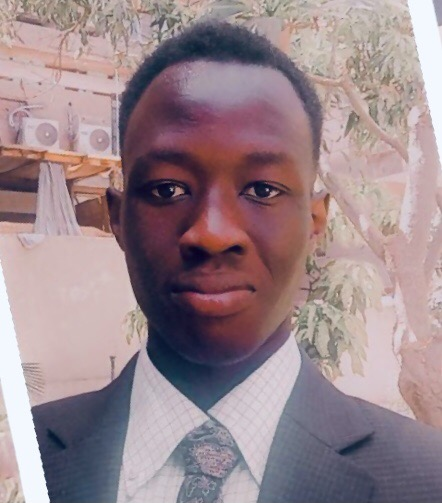

Madut Bol | WDD 130
Hi! My name is is Madut Bol and I reside in Cairo,Egypt but I am from South Sudan I moved here 6 years ago with my family and I really enjoy it here. My hobbies is reading books and I enjoy playing football. Besides that glade to be here to inhance my learning carrer. In addittion to all that I really care about my growth in every area of my life such as Spiritual, physical and social which I have and always been working on everday of my life as I also try to balance between all of them which was a bit of challeng but accepted the fact that nothing such as hard if we don't try our best and eventually becomes a habit to do.